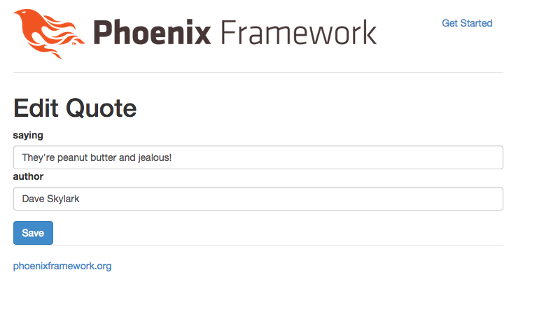

Next up in setting up CRUD will be to allow us to edit and update a quote in our database.
To start with, let's add a link to the edit page to the index page. Edit web/templates/quote/index.eex to look like this:
<table>
<thead>
<tr>
<th>Saying</th>
<th>Author</th>
<th>Actions</th>
</thead>
<%= for q <- @quotes do %>
<tr>
<td>
<a href="<%=quote_path(@conn, :show, q.id) %>">
<%= q.saying %>
</a>
</td>
<td>
<%= q.author %>
</td>
<td>
<a href="<%=quote_path(@conn, :edit, q.id) %>">
Edit
</a>
</td>
</tr>
<% end %>
</table>
Return to the quotes index page and notice that a link to the edit page comes up. Awesome. When you click it, it gives you an error that the action isn't present in the controller. Let's add it!
Edit web/controllers/quote_controller.ex to look like this:
defmodule Splurty.QuoteController do
use Phoenix.Controller
alias Splurty.Router
import Splurty.Router.Helpers
plug :action
def homepage(conn, _params) do
render conn, "homepage.html"
end
def index(conn, _params) do
conn
|> assign(:quotes, Repo.all(Splurty.Quote))
|> render("index.html")
end
def new(conn, _params) do
render conn, "new.html"
end
def create(conn, %{"quote" => %{"saying" => saying, "author" => author}}) do
q = %Splurty.Quote{saying: saying, author: author}
Repo.insert(q)
redirect conn, to: quote_path(conn, :index)
end
def show(conn, %{"id" => id}) do
{id, _} = Integer.parse(id)
conn
|> assign(:quote, Repo.get(Splurty.Quote, id))
|> render("show.html")
end
def edit(conn, %{"id" => id}) do
{id, _} = Integer.parse(id)
conn
|> assign(:quote, Repo.get(Splurty.Quote, id))
|> render("edit.html")
end
end
Save the file. Now if you refresh the edit page, you'll see an error that the template doesn't exist yet. This makes sense, since we haven't built one. Let's build one now.
Add a file in web/templates/quote called edit.html.eex:
Hello!
Save the file. Nice the error message went away. Now let's add the real form. For now let's just copy and paste the markup from the new.html.eex and make a few edits.
<h1>Edit Quote</h1>
<form action="<%= quote_path(@conn, :update, @quote.id) %>" method="post">
<div class="form-group">
<input type="hidden" name="csrf_token" value="<%= csrf_token(@conn) %>">
<input type="hidden" name="_method" value="put">
<label for="quote[saying]">saying</label>
<input type="text" name="quote[saying]" class="form-control" value="<%= @quote.saying %>" />
<label for="quote[author]">author</label>
<input type="text" name="quote[author]" class="form-control" value="<%= @quote.author %>" />
</div>
<button type="submit" class="btn btn-primary">Save</button>
</form>
Save the file and refresh the page. Awesome, our form came up.
Press the submit button. You'll see an error message that there is an undefined controller action for update. This makes sense. Let's jump in and add one.
Edit web/controllers/quote_controller.ex to look like this:
defmodule Splurty.QuoteController do
use Phoenix.Controller
alias Splurty.Router
import Splurty.Router.Helpers
plug :action
def homepage(conn, _params) do
render conn, "homepage.html"
end
def index(conn, _params) do
conn
|> assign(:quotes, Repo.all(Splurty.Quote))
|> render("index.html")
end
def new(conn, _params) do
render conn, "new.html"
end
def create(conn, %{"quote" => %{"saying" => saying, "author" => author}}) do
q = %Splurty.Quote{saying: saying, author: author}
Repo.insert(q)
redirect conn, to: quote_path(conn, :index)
end
def show(conn, %{"id" => id}) do
{id, _} = Integer.parse(id)
conn
|> assign(:quote, Repo.get(Splurty.Quote, id))
|> render("show.html")
end
def edit(conn, %{"id" => id}) do
{id, _} = Integer.parse(id)
conn
|> assign(:quote, Repo.get(Splurty.Quote, id))
|> render("edit.html")
end
def update(conn, %{"id" => id, "quote" => %{"saying" => saying, "author" => author}}) do
{id, _} = Integer.parse(id)
q = Repo.get(Splurty.Quote, id)
q = %{q | saying: saying, author: author }
Repo.update(q)
redirect conn, to: quote_path(conn, :show, q.id)
end
end
Save the file.
Try to update the quote again from the form. Awesome, it works! :)
Your edit page should look like this:
